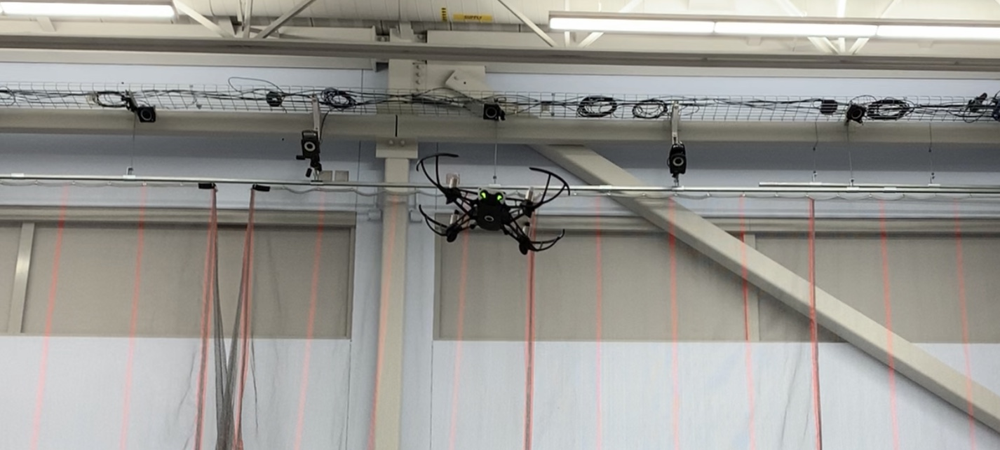

Minimum-Snap Trajectory Generator with Error-State LQR Control
Applying advanced robotics principles to quadrotor flight.

Abstract: In an attempt to increase the agility of the Parrot Mambo quadrotor platform in tracking smooth, continuously varying position trajectories, the Simulink flight control system is augmented with a full-state trajectory generator, error-state LQR controller, and an updated attitude controller. The trajectory generator, which takes advantage of the differential flatness of multirotor dynamics, is able to generate a full-state trajectory from position, velocity, acceleration, and jerk commands. The error-state LQR and attitude controllers allow the quadrotor to follow the generated reference trajectory with greater accuracy than the default Simulink flight control system for the Parrot Mambo. Explanations and derivations for the Lie derivatives used for the error-state LQR are given. Simulation and hardware results are used to validate the performance of the augmented flight control system.
